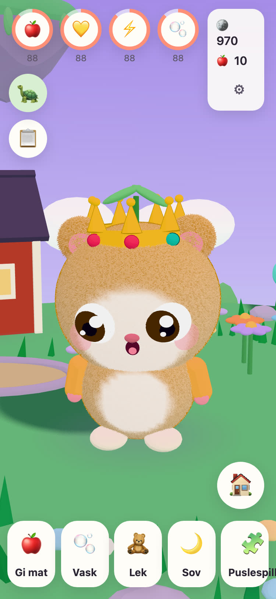
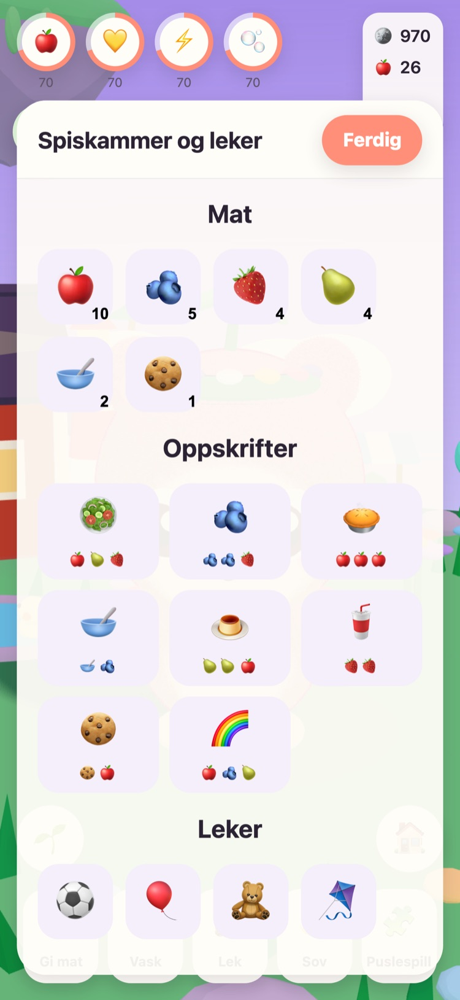
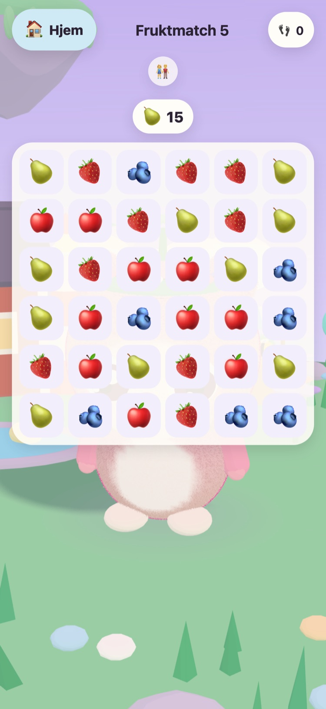
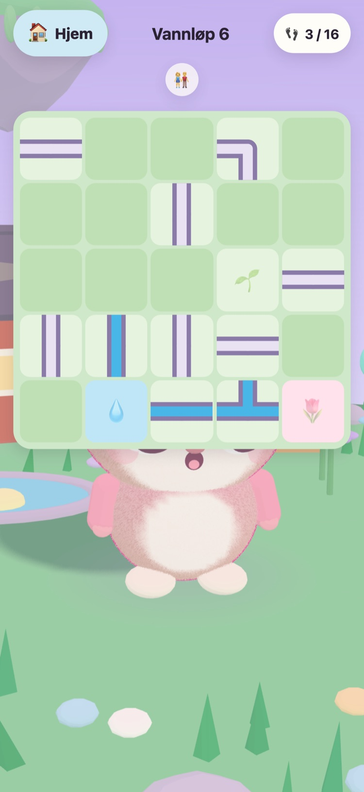
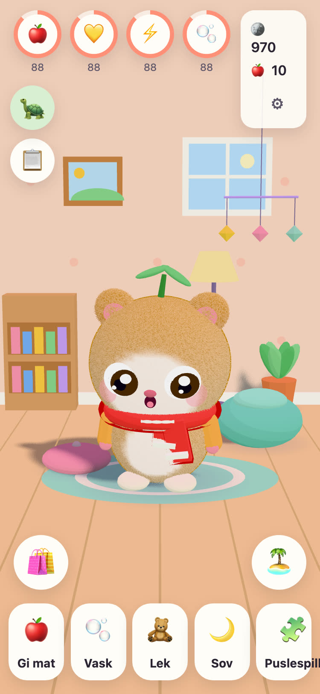
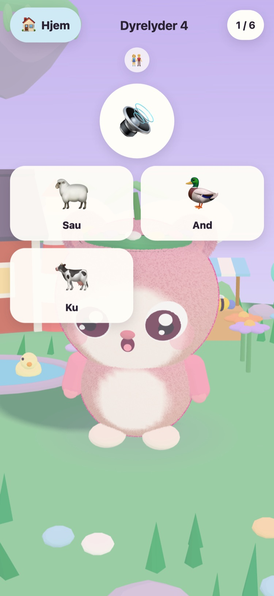

JUNOLittle Worlds
Klekk en Juno, ta vare på den, og løs vennlige puslespill som vekker en svevende øy. Et rolig spill for barn fra 6 til 10 år, på iPhone og iPad.
Hei! Jeg har funnet tre varme egg. Hvilket er ditt?
- Ingen reklame
- Ingen sporing
- Ingen konto
- Ingen tidtakere eller press






En helt egen liten venn
Morfar Tintin, den gamle skilpadden som passer på Engøya, har funnet tre varme egg. Barnet ditt velger ett og gir det som klekkes, et navn. Fra da av er Junoen barnets egen å gi mat, vaske, leke med og legge for en lur.
-
Velg et egg
Tre varme egg i tre farger. Barnet ditt velger ett og ser det klekkes.
-
Gi den et navn, og vær glad i den
Mat, vask, lek og lur. Junoen viser hvordan den har det, og vokser i takt med vennskapet.
-
Vekk øya
Hver stjerne fra et puslespill bringer lyset tilbake til Engøya, til blomster, bier og ender er hjemme igjen.
Mat, vask, lek, lur
Forskjellig mat og leker, bobler i badet og en Juno som viser hvordan den har det. Behovene synker sakte og aldri til null, så en Juno går aldri tapt.
57 vennlige puslespill
Fruktmatch, Minnehagen og Dyrelyder og Kjøretøylyder med ekte opptak. Stjerner kommer fra trekk, aldri fra tid, og det er alltid gratis å prøve igjen.
En øy som våkner
Blomsterhagen åpner seg med bier, Andedammen fylles med vann og ender, og frø vokser til epler og jordbær i hagebedene.
Et rom å gjøre koselig
Mynter fra puslespill og dagens oppdrag kjøper pynt til rommet til Junoen og klær å ha på seg. Ingenting i myntbutikken koster ekte penger.
Lest høyt
Morfar Tintin leser hver eneste linje høyt med sin egen varme stemme, for barn som ikke kan lese ennå. Trykk på ham for å høre det igjen.
Et sted for foreldre
Bak en foreldresperre: språk, opplesning, lyder, leggetid og en vennlig påminnelse om pause. Ved leggetid sover Junoen, og puslespillene venter til morgenen.
Snakker 21 språk
Morfar Tintin snakker med barnet ditt på barnets eget språk. Velg et under Foreldre, eller la spillet følge enheten.
English Svenska Dansk Norsk Suomi Deutsch Nederlands Français Español Italiano Português (Brasil) Polski Русский Ελληνικά Türkçe Bahasa Melayu Kiswahili हिन्दी 日本語 한국어 简体中文
Laget av en morfar
JUNO er laget i Sverige av en morfar til barnebarnet hans: et spill han gjerne ser henne spille. Morfar Tintin, skilpadden i spillet, er ham selv.
Derfor er reglene enkle. Ingenting som presser, ingenting som lurer, og ingenting som samler inn noe om barnet ditt.
Gratis, uten reklame
JUNO er gratis å laste ned og har ingen reklame, ingen sporing og ingen konto. Alt barnet ditt gjør, blir på enheten din. Se siden om personvern.
En voksen kan kjøpe JUNO Plus eller Vinterpakken under Foreldre, bak foreldresperren. Begge er engangskjøp som du kan gjenopprette og dele med familien din.